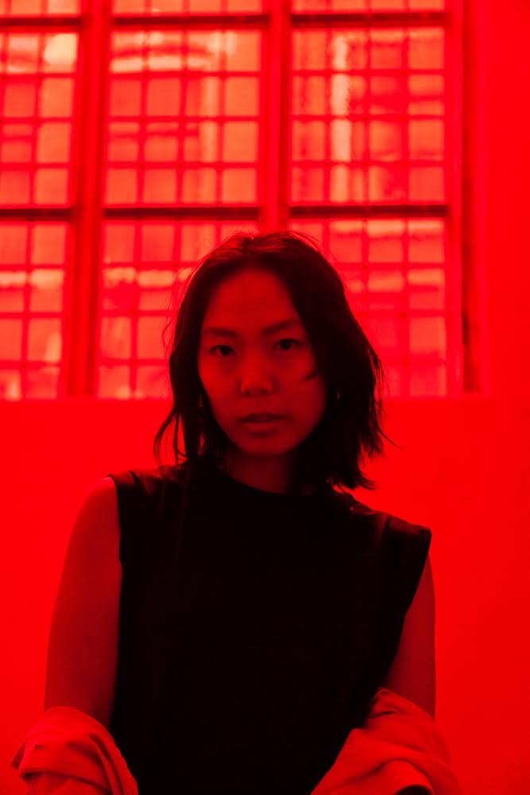

My work explores how art moves across institutions, markets, and media, with a
focus on the politics of visibility and value. I am dedicated to supporting
artists and cultivating new spheres of engaging with art by teaching.
Over the last decade, I have contributed to curatorial and editorial projects
with institutions like Curationist, the Nasher Sculpture Center, Metropolitan Museum of Art,
Miguel Abreu Gallery, and Pera Museum. Fluent in English, Korean, and Turkish,
I collaborate across languages to support cross‑cultural dialogues.
I hold a Master’s in Art and Museum Studies from Georgetown University and have
experience leading university‑level study‑abroad programs in Europe as a Ph.D.
student at the University of Washington, Seattle.
For more information about specific projects or collaboration, please check out
my work samples and contact me.